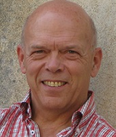

Through our Fellows program, the Worker Institute acknowledges the groundbreaking work of our external colleagues and partners in the labor movement. Worker Institute Fellows have been nominated due to their ongoing and continued work on key Worker Institute projects.
Joe Alvarez
Joe is a veteran labor leader, organization development expert, and visionary labor educator. After a 30-year history in social justice activism and labor organizing, he co-founded the Alvarez Porter Group in 2007 to help leaders and organizations work effectively toward creating a just, equitable, and sustainable world. As an organization development practitioner, Joe specializes in developing leadership in others and in helping unions and social change organizations to be visionary, adaptive, and effective.
Joe has extensive experience working with large local and national membership organizations that face the challenge of successfully combining democratic governance with programmatic effectiveness. His work with unions has involved him in a number of industries, including retail, food processing, arts and entertainment, transportation, public sector, education, construction, and health care. He has also worked with national, state, and local union federations, as well as with unions in Indonesia, Canada, and the United Kingdom. His work among non-profits has been with organizations involved in community organizing, civil rights, housing, human rights, and environmental sustainability.
Joe was the Northeast Regional Director of the AFL-CIO before pursuing a graduate degree in leadership and organizational development. He designed and co-led the AFL-CIO's "New Alliance" program, a major state-by-state campaign to revitalize and reorganize state and local AFL-CIO bodies. In 2000, he helped found the New York AFL-CIO/Cornell University Union Leadership Institute, where he still teaches. He has led courses in union leadership and management at U-Mass Amherst, City University of New York, and at The Worker Institute at Cornell. Joe is a member of the NTL Institute for Applied Behavioral Sciences.
Heather Berthoud
With 25 years in organization effectiveness, Heather Berthoud is a thoughtful and trusted partner to organizational and community leaders. She combines a passion for social justice with a focused practical results-orientation that builds the ability of leaders and organizations to accomplish their goals, learn, and enjoy. Clients and colleagues describe her as insightful, fun, straightforward, challenging and supportive. She identifies the essence of issues along with models and perspectives that clients can apply themselves. She brings lightness and depth to often challenging situations.
Her clients include Advocates for Youth, American Federation of State County and Municipal Employees (AFSCME), Center for Community Change, the Interfaith Alliance, NARAL Prochoice America, the National Labor College, and the Sierra Club. In addition to her consulting practice, she is faculty for the American University Masters in Organization Development and a Professional Associate at the Gestalt International Study Center.
She has authored several publications on diversity, planning, training and consulting. Her most recent publication, coauthored with Jen Ray of NARAL, is "Diversity initiative in a social change organization: A case study" in the December 2010 issue of the Tamara Journal for Critical Organization Inquiry. She is a member of NTL Institute for Applied Behavioral Sciences, the Organization Development Network, and the Gestalt International Study Center. Heather has played a key role in the development of the Worker Institute's National Labor Leadership Initiative.
J. Mijin Cha
J. Mijin Cha, Associate Director, works in the Equity as a Superior Growth Model program PolicyLink. Prior to PolicyLink, Mijin worked at Demos, where she authored several reports on money in politics, voting reforms, and new measures of economic progress.
She has also spent several years working on environmental justice and green economy policy issues internationally and domestically. Her work experience includes senior research, policy, and legal positions at Urban Agenda, the Progressive States Network, and the Center on Race, Poverty and the Environment. She has also worked internationally with the Integrated Center on International Mountain Development (ICIMOD) in Nepal and The International Union for the Conservation of Nature.
Mijin has authored several reports and publications, including Stacked Deck: How the Dominance of Politics by the Affluent and and Business Undermines Economic Mobility, The New York City Green Collar Jobs Roadmap, Increasing Access to Environmental Justice: A Resources Book for Advocacy and Legal Literacy in South Asia; a chapter on the U.S. environmental justice movement in Access to Environmental Justice: Comparative Perspectives (Martinus Nijhoff 2007); and a chapter on indigenous mountain communities in Nepal in Climate Change and Indigenous People: The Search for Legal Remedies (Edward Elgar 2013). She has written for various outlets including, The American Prospect, the Huffington Post, Dissent, the Indypendent, and the Demos blog PolicyShop.
Mijin is a graduate of Cornell University and holds a J.D. from the University of California, Hastings College of the Law, and LL.M. and Ph.D. degrees from the University of London, SOAS. She is a member of the California Bar and an adjunct professor at Fordham Law School.
Mijin has worked closely with the Worker Institute, particularly the Global Labor Institute (GLI), for several years and has participated in the GLI's Labor Leaders Climate Forum. Mijin is currently collaborating with the Worker Institute on research related to the economic and environmental impacts of Hurricane Sandy.
Al Davidoff
Al Davidoff is the Director of Governance, Organizational and Leadership Development for the AFL-CIO. He began his more than thirty years in the labor movement as a student activist at the ILR School, serving as President of the Student Government and Director of Frontlash.
Al worked as a Cornell custodian while at the ILR School, and during that time became active in the United Auto Worker's (UAW) organizing drive that led to the creation of Local 2300 UAW. He was elected President of the new local where he led negotiations. He also assisted in organizing many other workplaces, and in the creation of the Midstate Central Labor Council. Al was elected President of the UAW's National Academic Council, representing all members working in colleges and universities.
In the mid-90s, Al served as the National AFL-CIO's Director for New York State, leading the process to reorganize and revitalize more than 30 New York labor councils. He then became 1199SEIU's Organizing Director for Upstate NY, and an elected Vice President representing thousands of health care workers.
In 2009 he left his long-time Upstate New York home to coordinate leadership development work at American Federation of Teachers (AFT), and served as Chief of Staff at AFT for two years before being asked to head up the AFL-CIO's leadership and organizational development initiative. With Jeff Grabelsky, Al has led the development of the Worker Institute's signature National Labor Leadership Initiative.
Michael Fichter

Michael Fichter, born and raised in the US, did his undergraduate studies in history at Stanford. He then went on to do his PhD in political science at the Freie Universitaet Berlin (FU Berlin), where he taught political science and labor relations until his retirement in 2011.Since 2005 he has been an adjunct faculty member of the Global Labour University in Germany, teaching courses on transnational corporations and global labor relations. From 2008 – 2012 he co-directed an international and multi-disciplinary team of researchers investigating the implementation of Global Framework Agreements. In this context he continues to consult with the Global Union Federations and the German unions.
Michael has published extensively on German and European labor relations and trade union movements. His most recent publications on global labor relations include 'Going local with global policies: Implementing international framework agreements in Brazil and the United States', in K. Papadakis (ed.) "Shaping Global Industrial Relations" (2011 with M. Helfen); 'Exporting Labor Relations across the Atlantic? Insights on Labor Relations Policies of German Corporations in the U.S.', in WorkingUSA (2011); and 'Building transnational union networks across global production networks: Conceptualising a new arena of labour-management relations' in the British Journal of Industrial Relations (2013 with M. Helfen). He also co-authored the chapter on Germany in the forthcoming ILR Press/Worker Institute publication "Mobilizing against Inequality" (Adler, Tapia, Turner, eds.), and has been an active participant since 2002 in The Worker Institute's annual Transatlantic Social Dialogue meetings.
Sonia Ivany
Sonia Ivany is Regional Director for the Workforce Development Institute and President of the NYC Labor Council for Latin American Advancement (LCLAA), the largest labor-represented chapter in the US. In her present position, she develops programs in the areas of labor leadership and education, immigration policy, coalition building, worker rights, and women's initiatives.
Sonia began her involvement in the labor movement as a rank-and-file leader in the organizing campaign that unionized Columbia Presbyterian Hospital into Local 1199 of Service Employees International Union (SEIU). After the campaign, she assumed union leadership positions as lead delegate, representative in local and citywide negotiations, education, hiring and cultural committees. She was a leader of 1199SEIU's Citywide Hispanic Committee. Sonia then joined 1199 SEIU as Citywide Political Coordinator. In that position, she organized the union's overall participation in GOTV operations, political campaigns, and social justice coalitions.
Additional positions held include: National Director of Special Projects, ILGWU, representing the union in national, state coalitions, and political committee; and the NYS AFL-CIO, where she developed the organization's first statewide immigration policy program and provided coordination of programs on civil rights, women issues and health care initiatives. Sonia was also a founding member of NY Jobs with Justice, and has served as citywide coordinator for the NYC Central Labor Council GOTV operations, legislative initiatives and strategic union campaigns. She has organized labor's participation at the Legislative Sessions of the NYS Assembly / Senate Puerto Rican / Hispanic Task Force since 1990.
She serves as a National LCLAA Vice-President; Vice-Chair, Somos el Futuro Inc.; Labor Advisory Board Member, Cornell University's ILR School; Co-Chair, NY Alliance for Labor Rights, Immigrant Rights, Jobs for All; Board Member, NYU Wagner Labor Archives; and Delegate to the NYC Central Labor Council, AFL-CIO. Sonia has been honored by several organizations, including: NYS Assembly & Senate, Puerto Rican / Hispanic Task Force, the NYC Council, NYS Black & Puerto Rican Caucus, Office of NYS Comptroller Thomas Di Napoli, Office of Attorney General Andrew Cuomo, NYC Comptroller William Thompson, 1199 SEIU, National LCLAA, NYS Teamster Hispanic Caucus, Mason Tenders DC, Hispanic Committee DC 37, TWU Local 100, Latino Laborer's Association, CSA Hispanic Committee, Asociacion Tepeyac, and The Workplace Project.
Jen Kern
Jen Kern is currently the National Issue Campaigns Director for the Working Families Organization. Building off the successful model of the Working Families Party in New York and Connecticut, Working Families aims to build, support, and coordinate effective and powerful state-level independent political organizations committed to making our political process work for working class, middle class, and poor people so that we can achieve a society that is fair and sustainable and lives up to the full promise of democracy. Jen leads campaign planning and support for the Working Families Organization's local and state issue campaign work. Prior to that, Jen was the Minimum Wage Campaign Coordinator at the National Employment Law Project (NELP) where she supported campaigns to raise the minimum wage at the local, state, and federal levels. For 15 years, Jen worked in the national office of ACORN, including ten years as the director of ACORN's Living Wage Resource Center, which served as a clearinghouse for the national living wage movement and provided direct organizing support for the campaigns driving the effort. At the Worker Institute, Jen has for several years been an active participant in our Transatlantic Social Dialogue.
E. Tammy Kim
E. Tammy Kim is Staff Writer at Al Jazeera America focusing on labor, poverty, and culture. Previously, she was a lawyer for low-wage workers and worker centers in New York City, as well as a unionist (UAW Locals 2320 and 2210) and adjunct professor. As an advocate and litigator, she supported the organizing campaigns of domestic and restaurant workers, construction day laborers, commercial cleaners, and taxi drivers. As a freelancer funded by the Ms. Foundation for Women, the Nation Institute, and the Asian American Writers' Workshop, she wrote about child care providers, domestic day laborers, welfare-to-work, and unpaid artists, among other topics. Educated at Yale and NYU School of Law, Tammy was raised by working-class Korean immigrants in Tacoma, Washington.
Tammy is actively engaged in the Worker Institute's Union Leadership Institute.
View Tammy's recent articles in Al Jazeera America and The Nation.
Deborah King
Deborah (Debby) King has had a long history with the labor movement, starting when she was a student at the ILR School working as a union organizer for District 65 during summer vacations. Since then she has served in various union roles, including Executive Vice-President for Collective Bargaining at 1199SEIU.
As a union leader, Debby has taken a leadership role in supporting the development of other union women. She participated in the first programs of Cornell's Institute for Women at Work and as a teacher at UALE's annual Northeast Regional Summer School for Union Women. As Vice-President of 1199 in Connecticut she was the chair of a coalition of public-sector unions that won pay equity for women state workers, raising salaries by more than $40 million a year. In 1994 she worked full time as an extension faculty member at the ILR School in New York City. During that year she helped organize support for union women around domestic violence and work/family balance and, several years later, became Chair of the New York Union Child Care Coalition. Debby has been a part-time member of the extension faculty at Cornell ILR since 1995.
Since 1995 Debby has been the Executive Director of the 1199SEIU Training and Employment Funds, which cover 250,000 workers and 700 employers in New York, New Jersey, Massachusetts, Maryland, Florida and the District of Columbia. She is also Executive Director of the Health Careers Advancement Program which has worked with SEIU locals and employers to develop funds that support health worker educational and career mobility in ten states.
Debby lived and worked in Ireland where she introduced the Cornell trade union women's leadership program to Irish unions and taught that program and others for both the Irish Congress of Trade Unions and the Irish Transport and General Workers Union. She is a contributing author to the book "Trade Union Women in Nine Countries" edited by ILR Professor Alice Cook.
Debby is actively engaged in several Worker Institute projects; her work is closely aligned with the Equity at Work Initiative.
Nadia Marin-Molina
Nadia Marin-Molina is the Workers' Rights Program Coordinator at the National Day Laborer Organizing Network (NDLON). In her position as Program Coordinator, she developed the "Rebuilding Together" project in response to Hurricane Sandy – through which network organizations carried out volunteer cleanup brigades throughout the region, trained more 2000 day laborers about the hazards that they face and their rights on the job, and provided personal protective equipment to these workers in New York and New Jersey.
Before joining NDLON staff, Nadia was the Executive Director of the Workplace Project, one of NDLON's member organizations. She received her J.D. from New York University School of Law, where she was a recipient of a Public Service Scholarship in recognition of her work with the Latino community. She received the prestigious Gloria Steinem Award for building the leadership and advocacy skills of Latino immigrant domestic workers, empowering them to challenge exploitative employers, on-the-job abuse, and substandard pay. She has also been awarded multiple recognitions due to her role in the Workplace Project's defense of the human rights of day laborers and other immigrant workers.
As part of a new Worker Institute-NDLON partnership, Nadia and her NYC-based colleagues are currently working from the ILR School's NYC office and are collaborating on new research on precarious workers and low wage work.
Sanjay Pinto
Sanjay Pinto is a sociologist based in Brooklyn with a range of interests related to social inequality, social policy, and social movements. His current work focuses largely on understanding labor market inequality and studying and supporting efforts to build power and raise standards for low-wage workers.
Sanjay spent several years working for social and economic justice organizations. He wrote about white supremacist groups and hate activity for the Southern Poverty Law Center, and was a researcher for the AFL-CIO’s Center of Strategic Research and SEIU’s building services local in Northern California.
With an MSc in Development Studies from the London School of Economics and a PhD in Sociology and Social Policy from Harvard, Sanjay’s academic writing includes work on unions and collective bargaining institutions in the US and other economically advanced countries. He co-organized a special section of the journal Politics & Society on global economic governance, and co-edited a book, New Visions for Market Governance: Crisis and Renewal, which was published by Routledge in 2012.
After completing his PhD, Sanjay spent two years as a post-doctoral research fellow at Columbia’s Committee on Global Thought. His recent work includes a report on the potential benefits of broad-based worker ownership written for the Surdna Foundation, and, for the Ms. Foundation for Women, a report on efforts to forge a more equitable childcare system in the US. Both will be released in the fall of 2015.
Sanjay’s research with The Worker Institute at Cornell focuses on understanding the impact of efforts to improve job quality for domestic workers in New York and elsewhere. He is also currently a fellow at the Rutgers School of Management and Labor Relations.
Roberta Reardon
Roberta Reardon was the founding Co-President of SAG-AFTRA from the overwhelmingly successful merger vote on March 30th 2012 until she stepped down in August 2013. Previously, she served three terms as national president of the American Federation of Television and Radio Artists. She was first elected AFTRA national president on July 21, 2007 by unanimous vote at the union’s 61st National Convention in Philadelphia. She was also a Vice President of the AFL-CIO from 2009-2013. Reardon was elected to the AFTRA NY Local Board and National Board in 1997 and became AFTRA NY Local President in 2003. She is a graduate of the NYS AFL-CIO/Cornell Union Leadership Institute in the class of 2005.
Ms. Reardon is an actor based in New York. She started her career working in daytime dramas and has appeared in hundreds of commercials, both on camera and voice-over as well as numerous stage plays. She is a trustee of the AFTRA Health and Retirement Funds. She also serves on the Board of the Actors Fund and is on the Executive Board of the NY CLC. Reardon has twice been named to The Hollywood Reporter’s Annual Women in Entertainment Power 100 and was named to Elle Magazine’s Women in Hollywood Power list.
She is currently consulting with the AFL-CIO as Special Liaison for Common Sense Economics. Roberta is also currently working on the WI’s publicly funded project on New Formations in the Arts and Entertainment Industry. The project involves conducting interviews and focus groups among the unions, creative professionals, and new workers in the live performance, film, music, and radio/television industries in NYC for the purpose of developing case studies. These cases will be used as the basis for dialogue among unions about the changing nature of the industry and the need for new thinking about how these unions represent a changing workforce.
She also teaches in the Cornell/CUNY Labor Relations Certificate program. She teaches a course on leadership in unions, and a course on contemporary issues for labor.
She continues to work as actor.
Maite Tapia
Maite Tapia is Assistant Professor at the School of Human Resources and Labor Relations at Michigan State University. She completed her Ph.D. in 2013 at the ILR School at Cornell University in the Department of Comparative and International Labor. Her dissertation focused on a cross-national comparison of community organizations in the US, UK, and Germany. More broadly, her research interests revolve around civil society organizations and collective representation, comparative labor and social movements in the US and Europe, as well as work and migration.
Maite has published some of her work in the British Journal of Industrial Relations and is, along with Lee Adler and Lowell Turner, co-editor of the forthcoming ILR Press book "Mobilizing against Inequality: Unions, Immigrant Workers, and the Crisis of Capitalism." For several years, she has been an active participant in The Worker Institute's Transatlantic Social Dialogue and since 2013 has taken on a more active role co-organizing the conference.
Maite has a master's degree in international organizations from the University of Parma, Italy and studied law as an undergraduate at University of Ghent, Belgium. She has also worked as a researcher for a labor institute in Bologna, Italy, examining industrial relations in Italy and Europe.